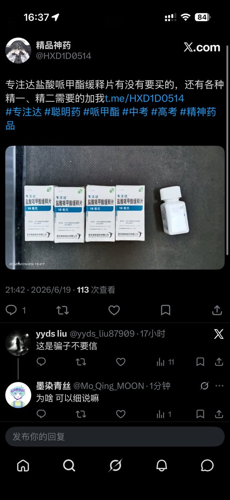

拱北靠北
@psyofsouthwest
RT @Mo_Qing_MOON: 警惕卖专注达的骗子，这种ai生成暗藏药名文案的大批机器人全都指向同一个tg骗子：@JPTT8KF 此人回复迅速滴水不漏疑似缅北团队。还有个穷要饭的网络乞丐@HXD1D0514。我将重复发这个帖子，不要再有人着被这两人骗了，我会永远看着你们👁️…

墨染青丝
@Mo_Qing_MOON
警惕卖专注达的骗子，这种ai生成暗藏药名文案的大批机器人全都指向同一个tg骗子：@JPTT8KF 此人回复迅速滴水不漏疑似缅北团队。还有个穷要饭的网络乞丐@HXD1D0514。我将重复发这个帖子，不要再有人着被这两人骗了，我会永远看着你们👁️👁️
#专注达 #哌甲酯 #利他林 #聪明药 #盐酸哌甲酯 https://t.co/JLhKMphNUX